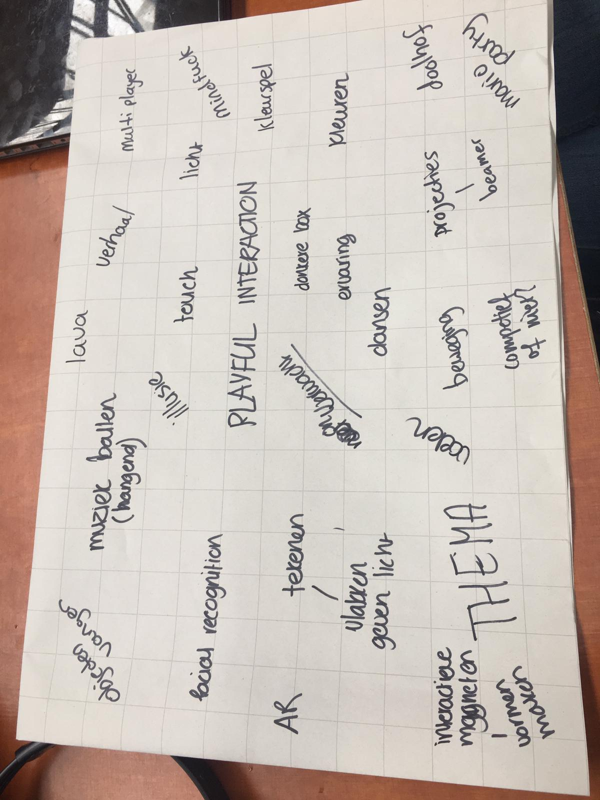
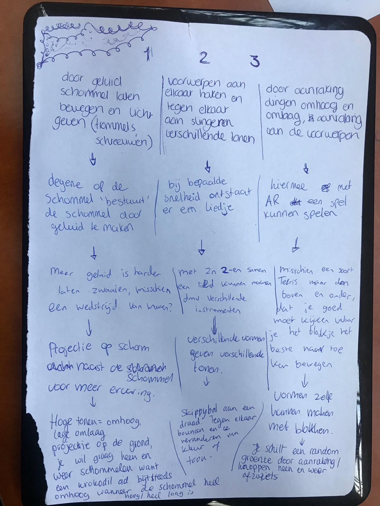
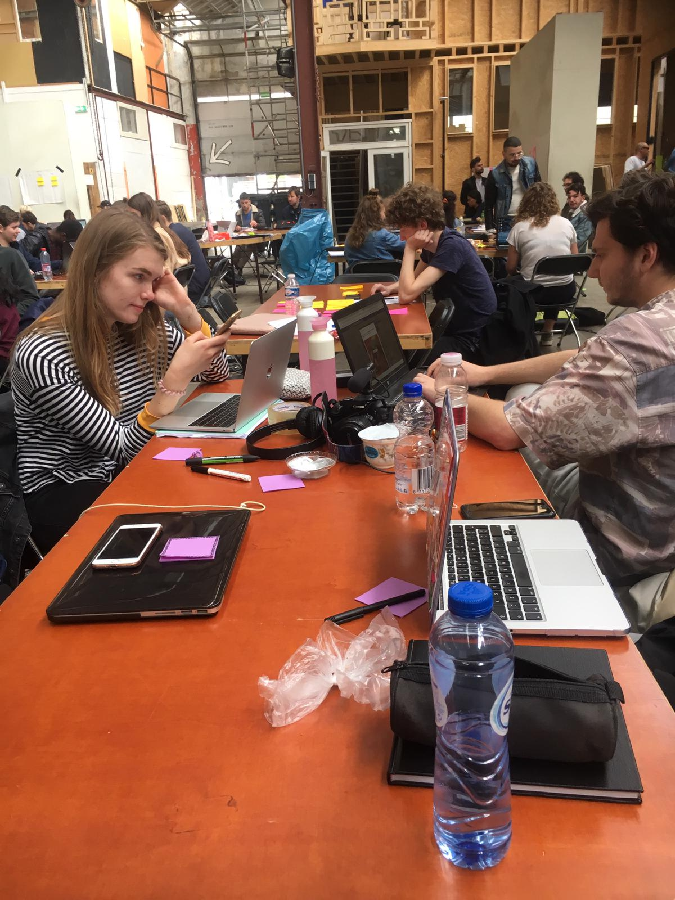
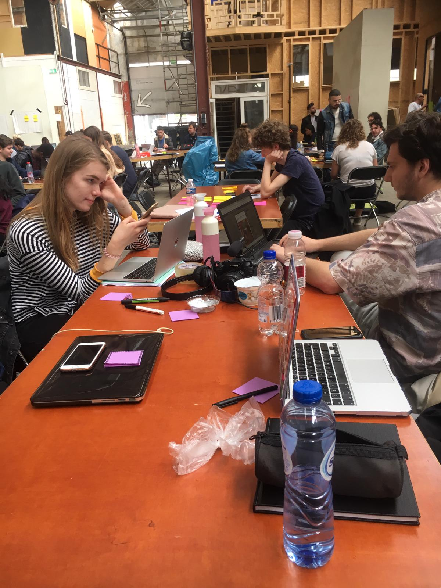
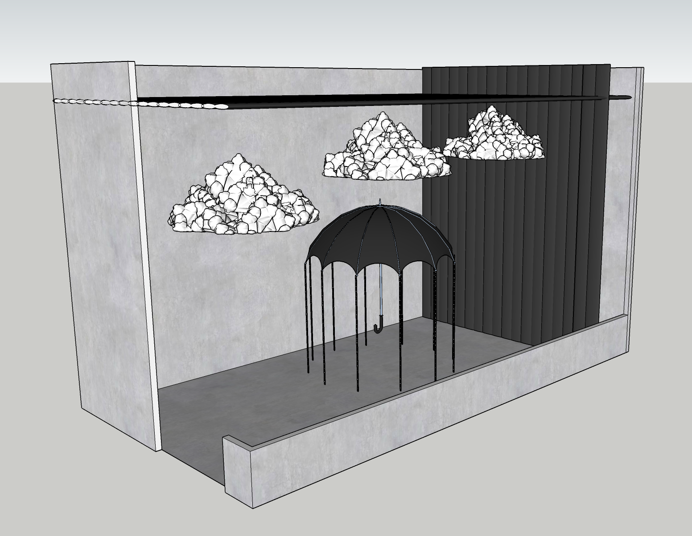
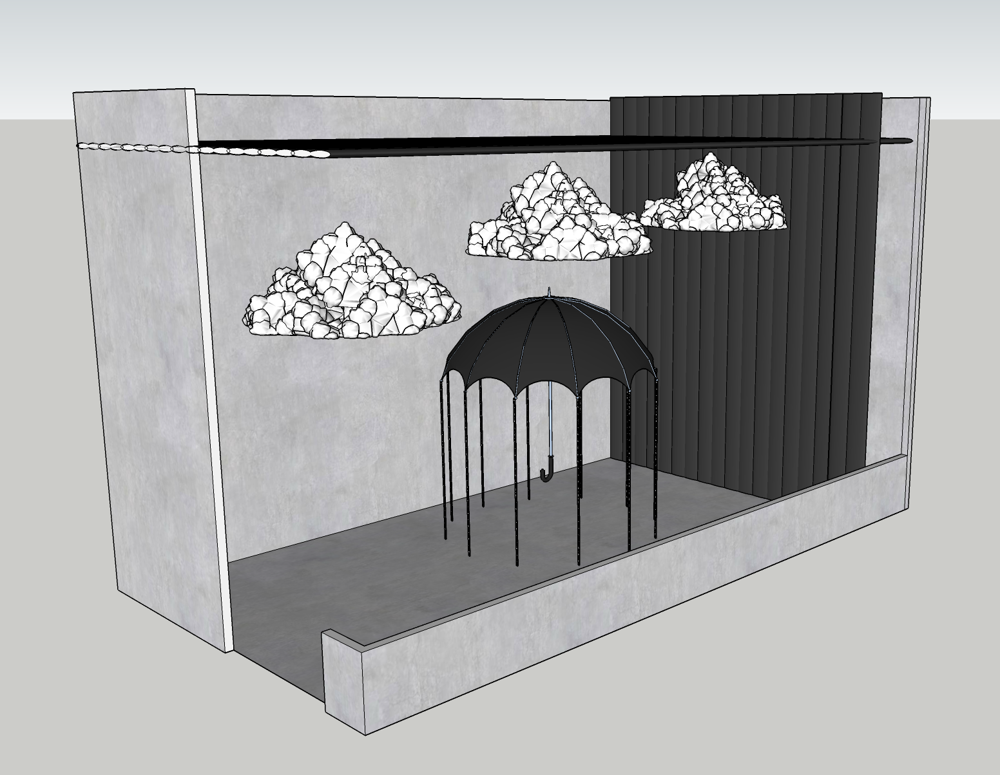
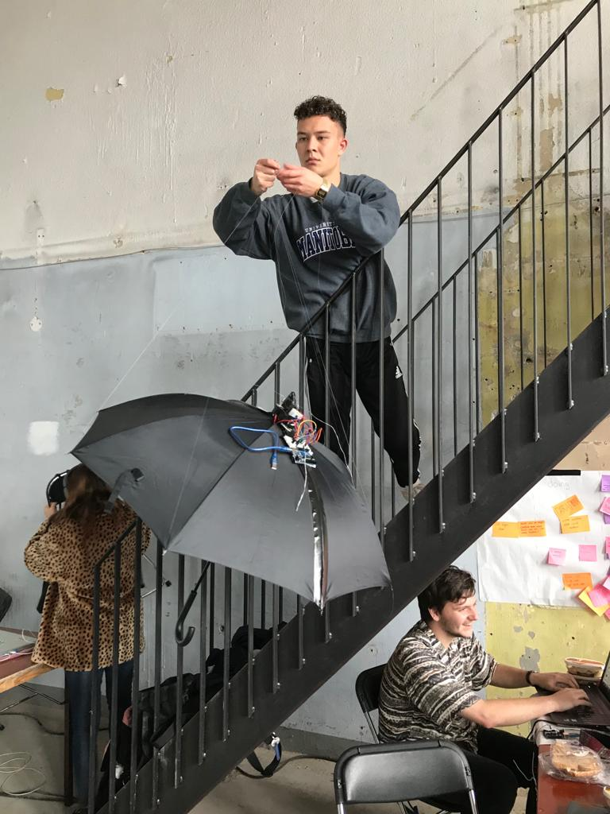
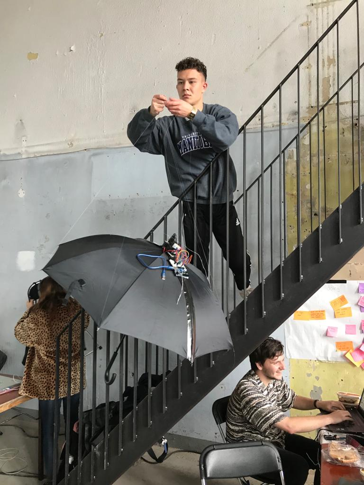

De twee labweken gingen beginnen. Na dat Chris zijn opstart praatje had gehouden konden we eindelijk zien welke topic we hadden en welk groepje. Mijn topic was playfull, dit is ook wat op mijn nummer 1 stond. We zijn begonnen met een voorstel rondje. Hierna zijn we eigenlijk meteen gaan kijken wat we van plan waren te doen. We begonnen met brainstormen. We hebben een web gemaakt waarin we alles schreven wat in ons opkwam. Ook zochten we wat inspiratie op het internet. Na deze start zijn we gaan kijken welke tools er waren en wat we hier mee konden doen. Door dit op te zoeken wisten we een beetje wat we konden gebruiken voor onze ideeën. Deze tools hebben we opgeschreven, en per tool zijn we hier weer allemaal ideeën voor gaan verzinnen. Hier kwam uit dat we iets wouden doen met mensen samen brengen op de expo, door middel van aanraking zou er iets kunnen gebeuren (kleur, licht). Om hierop verder te gaan, hebben we met ze alle de 6-3-5 methode toegepast. Iedereen verzint 3 ideeën, en hier gaat de volgende op verder. Hierdoor zijn we uiteindelijk op een soort concept gekomen. Het idee was dat wanneer mensen op een plaat stonden, zij een primaire kleur werden (rood, groen, blauw). Wanneer je dan bijvoorbeeld geel was, kon je met geel op een muur tekenen. Wanneer er iemand anders bij kwam kreeg die gene ook een kleur, bijvoorbeeld blauw, door elkaar een hand te geven word je samen groen, en kan je met groen verder kleuren. Zo kun je een heel kleure pallet creeëren, door met zoveel mogelijk mensen samen te werken. Hierna gingen we aan de slag met de de arduino capacitive touch. Dit moet ervoor zorgen dat wanneer je iets aanraakt er een output komt. Dit wou nog niet werken. We hebben deze dag nog geen tools van school kunnen proberen, omdat veel was uitgeleend.
  



 


 
